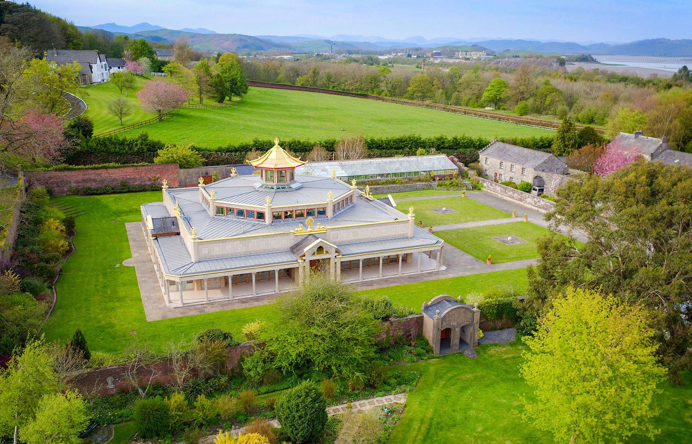
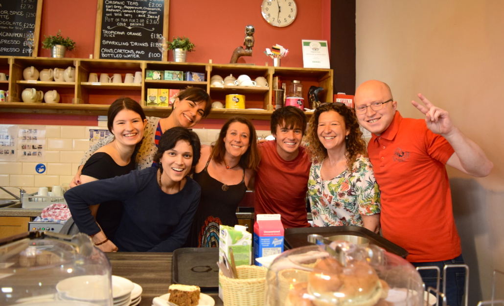

"Buddha is the doctor who gives us this medicine, and the Sangha are the nurses who assist us."
~ Geshe Kelsang Gyatso
International Community
The New Kadampa Tradition has a vibrant community across the globe that has been expanding
year after year. This community is termed "Sangha", and it is a group of spiritual friends
who are there to help guide and support you along the path to peace and enlightenment.
Through the international Temples project, the New Kadampa Tradition aim to have a Kadampa
Temple in every major city worldwide, making the teachings of Buddha available readily to
people of this modern world.

First NKT Temple, Ulverston, Lake District, UK
Ways To Connect In Person
Should you wish to spend some time experiencing the community and what
it is like to be amongst like-minded people, I highly recommend attending
one of their international festivals or even booking into one of their centers
for a working holiday.
International Festivals
Geshe Kelsang Gyatso giving a teaching
The New Kadampa Tradition holds three primary festivals per year. Manjushri Meditation Center,
located in the Lake District, is considered the hub of the New Kadampa
Tradition and hosts two of the three international festivals between the
spring and summer seasons. The third festival then moves around to a different
global location every fall.
These festivals usually have over 3000 attendees gathering
from across the globe in one place for a meaningful holiday. There is no
obligation to work at a festival; however, it is run entirely by volunteers
should you be the sort who likes to keep busy whilst making new friends.
The teachings are provided in English and translated into multiple languages
via headsets. You can book translation with one easy click during the booking stage.
For more information on future festivals, you can visit the traditions
festival page.
There are also smaller, more regional festivals throughout the year.
You can find more information about these small scale festivals on the traditions regional courses page.
Working Holidays

Volunteers hard at work
Kadampa Meditation Centers take a lot of effort to maintain. Centers around the world are usually
open to offering free accommodation, food and classes to anyone willing to spend
a week or two living within the center whilst helping out with the various activities
required to run it. You even get plenty of time off to explore the geographical location
during your evenings and weekends.
The conditions and tasks would vary according to the center's needs. Should you wish to
learn more about this, you can use this
center locator tool
on Kadampa.org and contact the desired center directly to ask about availabilities for working holidays and what that would look like at
their center.
Please note that due to covid restrictions, some centers may currently be unable to offer
working holidays. Despite this, I am sure they would welcome the opportunity to connect
with you via email and discuss any plans you may want to make for the future or even settle
any curiosities you may have regarding the tradition.